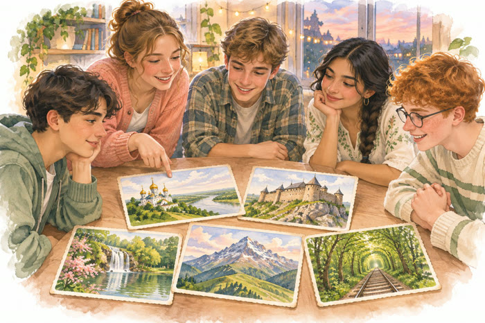

Listen to the text
Speed:

My great-aunt Liuba is eighty-one, and she doesn't trust the internet. "If you want me to believe that you were there," she says, "send me a postcard." So last summer, when our family travelled around Ukraine by car, I sent her five. She has kept them all, and she let me copy them for the school magazine. Postcard 1. Kyiv. Dear Aunt Liuba! We are standing on a hill above the Dnipro. Behind me are the golden domes of the Kyiv-Pechersk Lavra, a monastery that is almost a thousand years old. We went down into the caves with thin candles. I was a little scared, and Dad pretended that he was not. The river is so wide that the other bank looks like another country. Postcard 2. Kamianets-Podilskyi. Imagine a town on a rock island, with a river canyon around it instead of a wall. A stone bridge leads to a fortress with many towers. We climbed one of them. A guide in armour let me hold a real sword. It is heavier than my school bag on Monday. Postcard 3. Uman. Today we walked in Sofiivka, a park that a rich count built two hundred years ago as a present for his wife. There are waterfalls, grottoes, a lake and an underground river where you travel by boat in the dark. Mum says that Dad has never given her even a flower bed. Postcard 4. The Carpathians. We climbed Hoverla, the highest mountain in Ukraine! It took us four hours to go up. My legs are shaking, and my face is burnt, but I have seen clouds from above. At the top there were about a hundred people, and everybody was smiling at strangers. Postcard 5. The Tunnel of Love, near Rivne. The last stop. It is a railway line inside a green tunnel of trees, three kilometres long. A small train still uses it. People say that if you make a wish here, it comes true. I wished that the holidays would never end. It didn't work. When we came home, Aunt Liuba put the five postcards in a row on her table. "I have lived in this country for eighty-one years," she said, "and I have seen only two of these places. Next summer you are taking me with you." We are already planning the route.
Tap any sentence to hear it again.
Сподобалось? На сайті ще більше матеріалів для вчителів!
Reader, презентації, ігри, діагностичні та контрольні роботи до підручників 1-11 класів.
Перейти на сайт materials.allaenglish.com